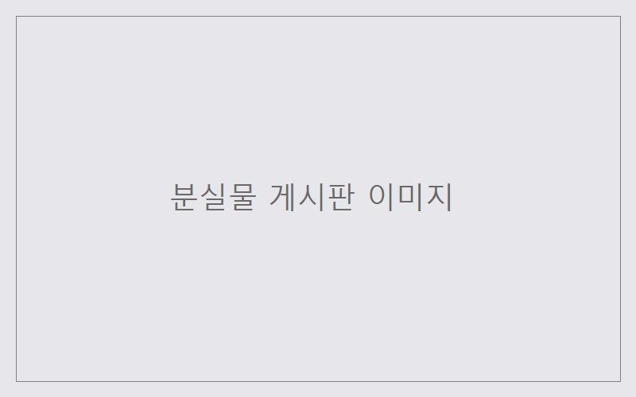

서비스 소개
잃어버린 물건, 더 이상 게시판을 뒤지지 마세요
캠퍼스 분실물 찾기는 학생들이 캠퍼스 안에서 잃어버리거나 주운 물건을 한곳에 등록하고 검색할 수 있는 서비스입니다.

주요 기능
-
분실물 등록하기
잃어버리거나 주운 물건의 사진과 장소를 등록합니다.
-
장소별로 검색하기
건물과 장소를 기준으로 분실물 목록을 찾아봅니다.
-
습득 알림 받기
내 물건과 비슷한 습득물이 등록되면 이메일로 알려줍니다.
이용 방법
- 잃어버린 물건의 정보를 등록합니다.
- 등록한 장소 주변의 습득물 목록을 확인합니다.
- 일치하는 물건을 찾으면 알림을 받고 찾아갑니다.